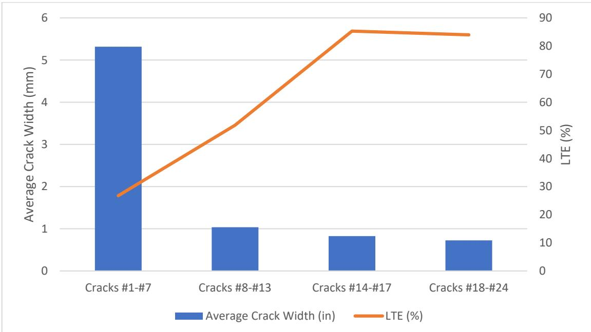
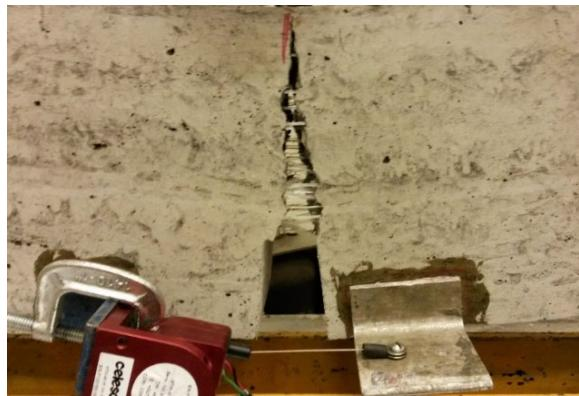
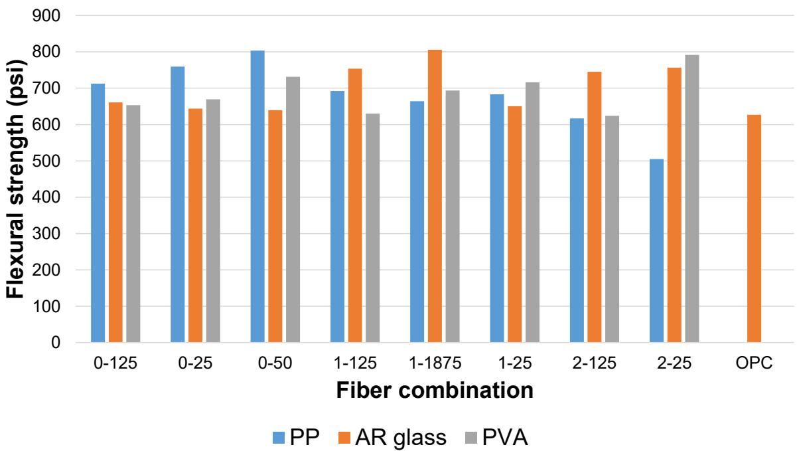
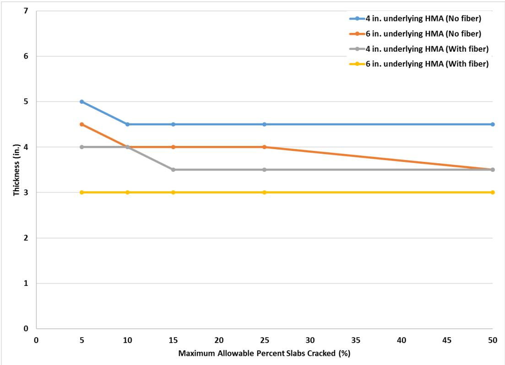
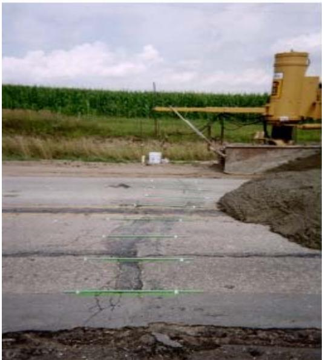
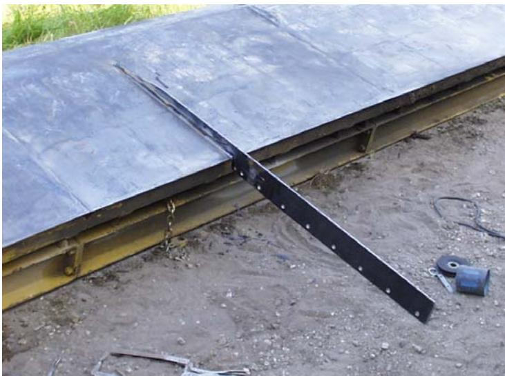
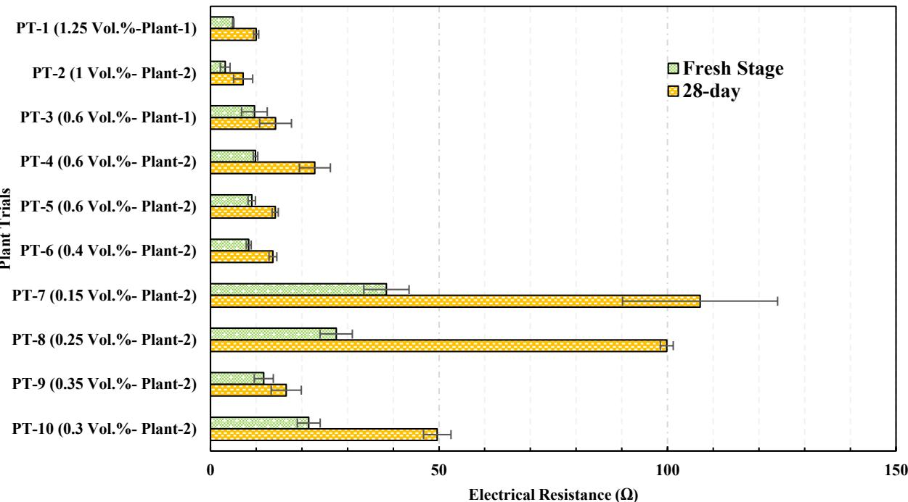
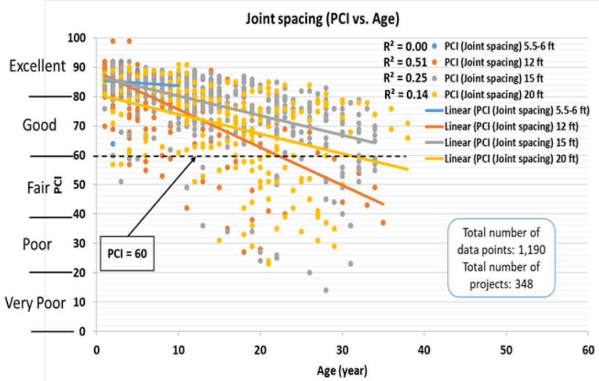

Fiber-Reinforced Concrete
Fiber-Reinforced Concrete is a type of concrete mixture within the Concrete Materials & Mixtures domain that incorporates discrete, randomly distributed fibers throughout the cementitious matrix [1]. The resulting composite material, called fiber-reinforced cementitious composite, provides distributed tensile reinforcement without requiring careful placement design. This addition enhances post-cracking ductility and residual strength by improving properties such as toughness, energy absorption, and fracture resistance [1], with effectiveness depending on factors like fiber-matrix bond and elastic modulus [1]. Unlike conventionally reinforced concrete with continuous rebar, FRC bridges cracks to provide post-peak mechanical performance. The category includes Alkali-Resistant Glass Fibers, which resist cement alkalinity, and Polyvinyl Alcohol Fibers, which are hydrophilic unlike the inert glass or synthetic options [1]. Synthetic reinforcement encompasses both Polypropylene Microfibers for early-age crack mitigation and broader structural types used in thin overlays, while Hybrid Fiber-Reinforced Concrete combines micro- and macrofibers to address cracking at multiple scales [2].
Sources (11)
Sub-concepts (5)
Mechanisms of Crack Mitigation
Fibers bridge newly formed cracks and prevent them from propagating excessively, yielding a concrete element with small, evenly distributed microcracks rather than a few large, concentrated cracks when fiber reinforcement is evenly distributed . Additionally, fibers help prevent aggregate settlement, which reduces bleed water , and they are effective at controlling differential slab movement resulting from the curling and warping of concrete slabs [3]. Once cracks have formed, fibers function to hold them tightly together [3]. Crack mitigation is most effective when fiber stiffness (elastic modulus) is similar to or higher than that of the concrete; specifically, at early ages, microfibers with lower elastic moduli can bridge microcracks and reduce plastic shrinkage cracking, whereas fibers with higher elastic modulus are preferred for significant increases in ultimate strength .
Regarding aggregate and crack dynamics, reducing the maximum size of coarse aggregate to mitigate D-cracking can lead to a greater incidence of intermediate transverse cracking [4]. Furthermore, load transfer efficiency (LTE) in FRC pavements declines logarithmically as crack width increases, with early-forming cracks exhibiting lower LTE than later-developing cracks due to reduced aggregate interlock at wider openings [5].

Average crack width and LTE for the Worth County test section, organized by group [5]The post-crack load-carrying capacity provided by fibers is known as residual strength, which primarily improves bending and flexure performance relative to plain concrete. [5]

Microfibers resisting crack opening in a single-edge notched beam [5]Fiber Categories and Types
Reinforcement materials consist of Metallic (steel, stainless steel), Glass (silica, basalt — typically AR glass), Synthetic (PP, nylon, PVA, polyolefin, carbon, PE, polyester, acrylic, aramid), and Natural (organic plant fibers) varieties.
Fiber-Reinforced Concrete incorporates Polyvinyl Alcohol (PVA) fibers, which are classified as synthetic reinforcement agents alongside other manmade materials like polypropylene and nylon [1]. These fibers enhance the cementitious matrix by providing additional tensile strength capacity to counteract the low tensile strength inherent in ordinary portland cement concrete [1]. This added strength helps reduce shrinkage-induced cracking, such as plastic shrinkage caused by water evaporation during the semiplastic phase of the concrete [1].
Fiber-reinforced concrete incorporates synthetic fibers, such as polypropylene and nylon, to mitigate plastic shrinkage cracking during the early curing phase [2]. Synthetic macrofibers have emerged as the most common type of fiber used in pavement applications due to their ability to resist microcracking and slow crack propagation [5]. These fibers provide residual strength that enhances long-term fatigue life when added at typical dosage rates [5].
Key Performance Properties
The performance of concrete overlays is influenced by various factors, including fiber shape, bonding and chemical compatibility with cement matrix, tensile strength, ultimate strain, elastic modulus, and fiber dimensions (diameter, length, aspect ratio). While the addition of non-metallic fibers does not significantly influence the chloride permeability or density of concrete overlays [4], the inclusion of structural macrofibers increases fatigue capacity and fracture toughness, which allows for a reduction in the required overlay design thickness [3].
The ratio of slab length to radius of relative stiffness (L/ℓ) serves as a critical indicator for joint activation behavior in thin overlays; specifically, designing joint spacing to achieve an L/ℓ value between 4 and 7 provides the desired balance between maximum, timely joint activation and good overlay performance [6]. In concrete overlays exceeding 6 inches in thickness with joint spacing greater than 12 feet, joint activation rates are high, often approaching 100%, whereas thinner overlays (4 to 5 inches) with shorter spacing typically exhibit activation rates between 60% and 80% [6].
 Joint activation vs. L/ℓ and joint spacing for Mitchell County concrete overlay test sections [6]
Joint activation vs. L/ℓ and joint spacing for Mitchell County concrete overlay test sections [6]

Flexural strengths of hybrid FRC with PP, AR glass, and PVA macrofibers [1]Microfibers vs. Macrofibers and Hybrid Systems
Microfibers, which typically have a length of <18 mm, are most effective at bridging microcracks in the interfacial transition zone and cement matrix; they are primarily used to mitigate early-age cracking, improve early-age strength, and reduce plastic shrinkage cracking . Due to their higher surface area-to-volume ratios, microfibers more severely impact workability . In contrast, macrofibers (typically >18 mm length and diameter >0.1 mm) are effective at bridging macrocracks formed from the growth of multiple microcracks, contributing to post-peak strength and ductility while having less impact on workability than microfibers .
Fiber-Reinforced Concrete serves as the foundational category for Hybrid Fiber-Reinforced Concrete, which is defined by the specific inclusion of two or more distinct fiber types within a single concrete matrix. This hybrid approach typically combines microfibers and macrofibers to leverage their complementary mechanical properties [1]. While standard FRC utilizes fibers from categories such as metallic, glass, synthetic, or natural materials [1], the hybrid variant specifically integrates these different scales to control both low tensile stresses and post-peak strength [1].
Fiber-Reinforced Concrete incorporates polypropylene microfibers primarily to mitigate early-age cracking by reinforcing the concrete matrix against tensile stresses [1]. These synthetic microfibers are added at specific dosages to enhance performance during the curing stage, where they help bridge micro-cracks before they can propagate significantly [1]. This application is distinct from macrofiber reinforcement, which targets post-peak mechanical strength rather than early-stage crack mitigation [1].
Dosage Rates and Inclusion Methods
Fiber inclusion rates in paving applications typically range from 1 pound per cubic yard for monofilament fibers to 3 pounds per cubic yard for fibrillated and structural synthetic fibers [2]. Depending on the application, dosages can vary significantly: polymer fibers, such as Strux 90/40, can be incorporated at high dosages of up to 7 pounds per cubic yard to enhance concrete performance in bridge deck applications [7], while synthetic macrofibers are typically dosed at rates of 6.0 lb/yd³ (about 0.4% by volume) in joint-free FRC roundabouts to control crack spacing and width, where initial cracks form within a week of construction [5].
In specific paving scenarios, such as ultrathin overlays on brick streets, polypropylene fibers at 1.5 lb/yd³ were used in one lane while the adjacent lane received no fiber reinforcement for comparative performance evaluation [8]. Regarding production quality control, the maximum truckload for a single batch of electrically conductive concrete should be limited to 6 cubic yards to prevent fiber balling and ensure uniform distribution [9], and fresh-stage electrical resistance measurements are critical, with target values typically falling between 4 and 10 ohms for standard beam dimensions [9].
Synthetic macrofibers typically range in length from 1 to 2 inches with diameters of 0.02 to 0.04 inches, and are dosed at rates between 0.2% and 1.0% by volume depending on the specific application requirements [5].
Applications in Thin Concrete Overlays
In concrete overlays thinner than 4 inches, fibers are utilized as an insurance policy to retard the loss of material around cracks rather than preventing cracking entirely [10]. Research has investigated using fibers to enable larger joint patterns in overlays that can match the underlying Portland cement concrete layer’s joint pattern [10]. Furthermore, the BCOA-ME design procedure incorporates fiber type and content as input variables to calculate recommended overlay thickness based on maximum allowable percentages of cracked slabs [6].

6-foot joint spacing concrete overlays using BCOA-ME design predicted thickness versus maximum allowable percent of cracked slabs [6]Crack Spacing in Roundabouts
In joint-free FRC roundabouts, transverse crack spacing averages approximately 13.8 ft when a middle ring radius is 492 ft, with earlier-forming cracks opening to significantly greater widths (e.g., 9.5 mm) than later-forming ones (0.36 mm) [5]. Measurable faulting across transverse cracks in these roundabouts can reach up to 12 mm (0.47 in.) under wheel paths, even when overall ride quality remains reasonable due to traffic speed reductions [5]. Regarding construction methodology, strength development for this project was measured using the maturity method [11]. To determine the time-temperature factor, which can be correlated to concrete flexural strength, temperature probes were inserted 100 ft. from the end point of each of the 91 test sections [11]. These temperatures were read four times a day, Monday through Friday [11]. Specifically, a 7.5 in. probe was inserted 1 ft. from the pavement edge to monitor the temperature at depths of 1, 4, and 7.5 in., while another probe was placed in the thin overlay section 6 ft. from the pavement edge to monitor the temperature at depths of 1 and 2 in. [11]. Based on these maturity probes, the center portion of the new roadway was open to local traffic at a flexural strength of 350 psi, while construction traffic was allowed on the slab at 500 psi [11].

Tied transverse crack [11]Construction encountered numerous difficulties in trying to reach a balance between preventing overrun, achieving the appropriate thickness, and maintaining a smooth ride [11]. These problems resulted from the survey/grade not being finished prior to paving; consequently, the Iowa DOT lowered the grades to control concrete overrun, which caused the ride quality, as measured by the profilograph, to suffer [11]. Other issues included excessive heat during construction, as the 1 in. HMA stress relief layer placed over the existing asphalt retained significant midday sun heat, reaching 120°F –130°F even after one application of water [11]. This raised questions regarding the effect of heat on slab strength gain and the bond between slabs [11]. Finally, the wide gap left behind the paver by the longitudinal joint–forming knife was problematic, requiring extra passes from workers using bu [11].

Longitudinal joint–forming knife [11]In thin overlays with short joint spacing (5.5- to 6-foot), thicker sections (6-inch) exhibit faster initial joint activation rates than thinner sections (4-inch), though ultimate activation rates converge over time [6].
Specialized Applications: Electrically Conductive Concrete
Electrically conductive concrete (ECON) relies on the formation of a continuous fiber network through percolation or electron tunneling to achieve sufficient electrical conductivity for ohmic heating [9]. However, prolonged mixing in ready-mix plants can abrade carbon fibers, disrupting this conductive network and increasing electrical resistance by up to tenfold compared to laboratory-produced samples [9].

Ready mixed concrete plant trial samples’ electrical performance [9]In applications exposed to moisture or deicing salts, carbon fibers are preferred over steel fibers because they remain completely noncorrosive [9]. While steel fibers are commonly used, they may corrode over time and degrade the heating efficiency of the system [9].
Joint Spacing Design Criteria
Designing joint spacing to achieve a ratio of slab length to radius of relative stiffness (L/ℓ) between 4 and 7 provides an optimal balance between timely joint activation and overlay performance [6].
Field reviews indicate that 12-ft joint spacing does not inherently cause poorer performance compared to other designs; underlying causes of distress are typically material-related issues, deficient thickness, or inadequate system drainage [3].

Iowa concrete overlay PCI performance history for four different concrete overlay joint spacing projects [3]Related Concepts
- Plastic Shrinkage Cracking
- Drying Shrinkage
- Polypropylene Microfibers
- Alkali-Resistant Glass Fibers
- Polyvinyl Alcohol Fibers
- Hybrid Fiber-Reinforced Concrete
- Interfacial Transition Zone
- Concrete Materials & Mixtures
- Synthetic Fiber Reinforcement
References
- B. Shafei, P. Taylor, B. Phares, and M. Kazemian, "Fiber-Reinforced Concrete for Bridge Decks," Bridge Engineering Center, Iowa State University, Ames, IA, Rep. TR-767, 2021. [Online]. Available: https://www.intrans.iastate.edu/wp-content/uploads/2021/12/fiber-reinforced_concrete_in_bridge_decks_w_cvr.pdf
- J. K. Cable, M. L. Anthony, F. S. Fanous, and B. M. Phares, "Evaluation of Composite Pavement Unbonded Overlays: Phases I and II," Center for Portland Cement Concrete Pavement Technology, Iowa State University, Ames, IA, Rep. TR-478, 2003. [Online]. Available: https://www.intrans.iastate.edu/research/completed/evaluation-of-composite-pavement-unbonded-overlays-phase-iii-tr-478-hr-1093-proj-2/
- J. Gross, D. King, D. Harrington, H. Ceylan, Y. A. Chen, S. Kim, P. Taylor, and O. Kaya, "Concrete Overlay Performance on Iowa's Roadways (Field Data Report)," National Concrete Pavement Technology Center, Ames, IA, Rep. TR-698, 2017. [Online]. Available: https://www.intrans.iastate.edu/wp-content/uploads/2017/09/Iowa_concrete_overlay_performance_w_cvr.pdf
- J. Grove, G. Fick, T. Rupnow, and F. Bektas, "Material and Construction Optimization for Prevention of Premature Pavement Distress in PCC Pavements," National Concrete Pavement Technology Center, Ames, IA, Rep. TPF-5(066), 2008. [Online]. Available: https://www.intrans.iastate.edu/wp-content/uploads/2018/03/mco-final.pdf
- D. King, B. Yang, P. Taylor, and H. Ceylan, "Field Performance of Fiber-Reinforced Concrete Overlays," Institute for Transportation, Iowa State University, Ames, IA, Rep. TR-816, 2025. [Online]. Available: https://www.intrans.iastate.edu/wp-content/uploads/2025/05/field_performance_of_frc_overlays_w_cvr.pdf
- J. Gross, D. King, H. Ceylan, Y. A. Chen, and P. Taylor, "Optimized Joint Spacing for Concrete Overlays with and without Structural Fiber Reinforcement," National Concrete Pavement Technology Center, Ames, IA, Rep. TR-698, 2019. [Online]. Available: https://www.intrans.iastate.edu/wp-content/uploads/2019/06/optimized_joint_spacing_for_overlays_w_cvr.pdf
- P. Taylor, P. Tikalsky, K. Wang, G. Fick, and X. Wang, "Development of Performance Properties of Ternary Mixtures: Field Demonstrations and Project Summary," National Concrete Pavement Technology Center, Ames, IA, Rep. TPF-5(117), 2012. [Online]. Available: https://www.intrans.iastate.edu/wp-content/uploads/2018/03/ternary_final_w_cvr.pdf
- J. K. Cable and J. Williams, "Evaluation of Unbonded Ultrathin Whitetopping of Brick Streets," CTRE, Iowa State University, Ames, IA, Rep. TR-466, 2006. [Online]. Available: https://www.intrans.iastate.edu/wp-content/uploads/2018/03/whitetopping.pdf
- M. L. Rahman, H. Ceylan, S. Kim, P. C. Taylor, and D. King, "Advancing Electrically Heated Pavements for Sustainable Winter Maintenance," PROSPER and National Concrete Pavement Technology Center, Iowa State University, Ames, IA, Rep. HR-3049, 2024. [Online]. Available: https://www.intrans.iastate.edu/wp-content/uploads/2025/03/electrically_heated_pavements_for_sustainable_winter_maintenance_w_cvr.pdf
- J. K. Cable, F. S. Fanous, H. Ceylan, D. Wood, D. Frentress, T. Tabbert, S. Y. Oh, and K. Gopalakrishnan, "Design and Construction Procedures for Concrete Overlay and Widening of Existing Pavements," Center for Portland Cement Concrete Pavement Technology, Iowa State University, Ames, IA, Rep. TR-511, 2005. [Online]. Available: https://www.intrans.iastate.edu/wp-content/uploads/2018/03/oreo_design.pdf
- J. K. Cable, J. L. Morud, and T. R. Tabbert, "Evaluation of Composite Pavement Unbonded Overlays: Phase III," CTRE, Iowa State University, Ames, IA, Rep. TR-478, 2006. [Online]. Available: https://rosap.ntl.bts.gov/view/dot/24065
Feedback on this page